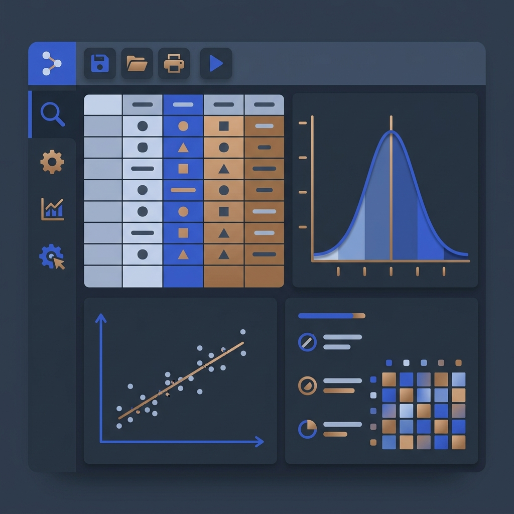

SPSS Data Analysis Service
Get professional support with SPSS syntax, variable structures, and output files. I translate raw SPSS outputs into clean, report-ready APA tables and clear descriptive text.

Academic integrity notice: I help clean data, configure variables, generate SPSS output files, and provide explanation notes. I do not invent variables, fabricate data outputs, or complete your university assignments/theses.
Professional SPSS Analysis Workflows
Struggling with SPSS syntax, variable types, or complex tables? Let me configure your statistics correctly.
1. Variable Setup & Coding
Correct data entry in SPSS is critical. I structure your SPSS Variable View, configure scale measurements (nominal, ordinal, scale), assign missing value behaviors, and code text answers into numeric indices.
2. Descriptive & Frequency Statistics
I run standard descriptive aggregates for your variables. You receive clean summaries containing sample frequencies, mean scores, standard deviations, skewness checks, and distribution histograms.
3. Group Comparisons (t-Tests & ANOVA)
Check for statistically significant differences between groups. I run independent-samples t-tests, paired t-tests, and One-Way or Two-Way ANOVA models, verifying homogeneity of variance assumptions.
4. Correlation & Regression
Examine variables dependencies. I compute Pearson or Spearman correlation coefficients and structure linear, multiple, or logistic regression models, evaluating multicollinearity (VIF scores) and residuals.
5. Non-Parametric Tests
If your dataset violates normal distribution parameters, parametric tests may bias results. I configure robust non-parametric tests like Mann-Whitney U, Wilcoxon signed-rank, or Kruskal-Wallis models.
6. Clear Output Summaries
I compile raw SPSS outputs (.spv files) into clean reports. You receive formatted tables, charts, and clear statistical interpretation notes explaining p-values and statistical significance.
Need help with your SPSS data?
Submit your project details today. Let me know your hypotheses, deadline, and dataset size. I will review the file requirements and email you a clean proposal.